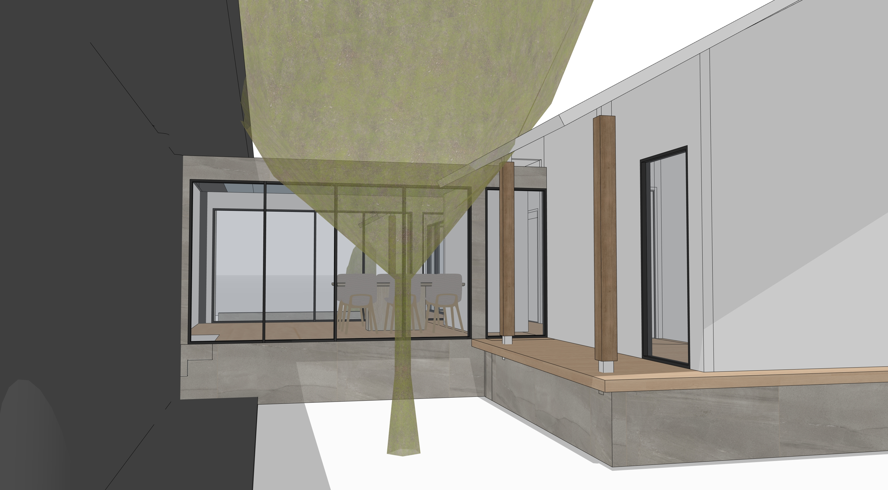
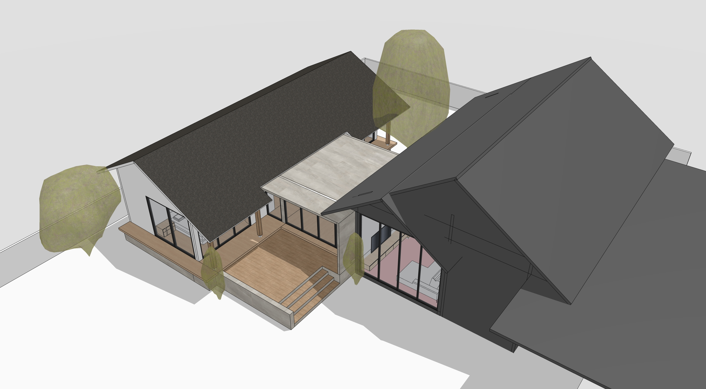
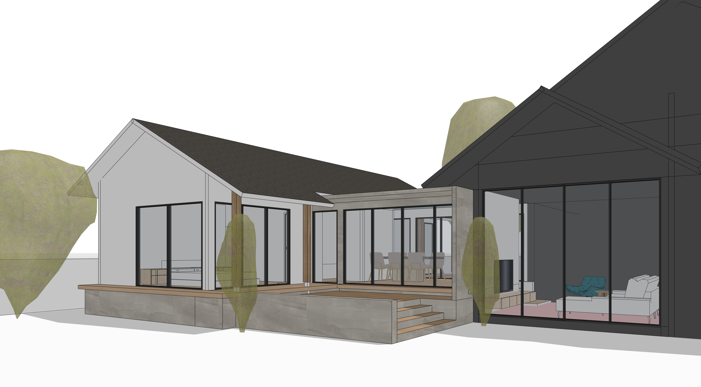

Mass & Void Study
A study of Mass and Void to manage light and wind according to the context of Phetchaburi. The design emphasizes simple yet powerful geometric shapes, creating dimensions of light and shadow that shift throughout the day, providing a living experience seamlessly connected to nature.



Using strategically placed openings (Voids) to bring in natural light, creating interior depth and reducing daytime energy consumption.
Designing balconies and relaxing areas with excellent ventilation, suited for Thailand's tropical climate.